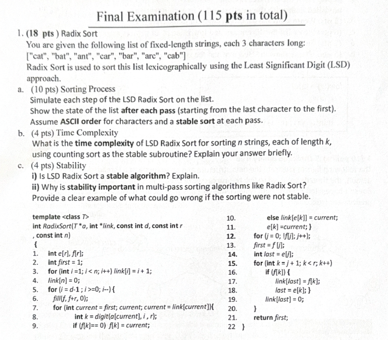
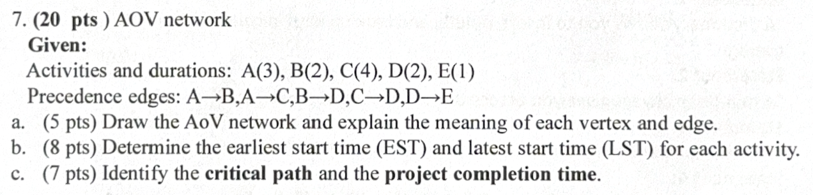
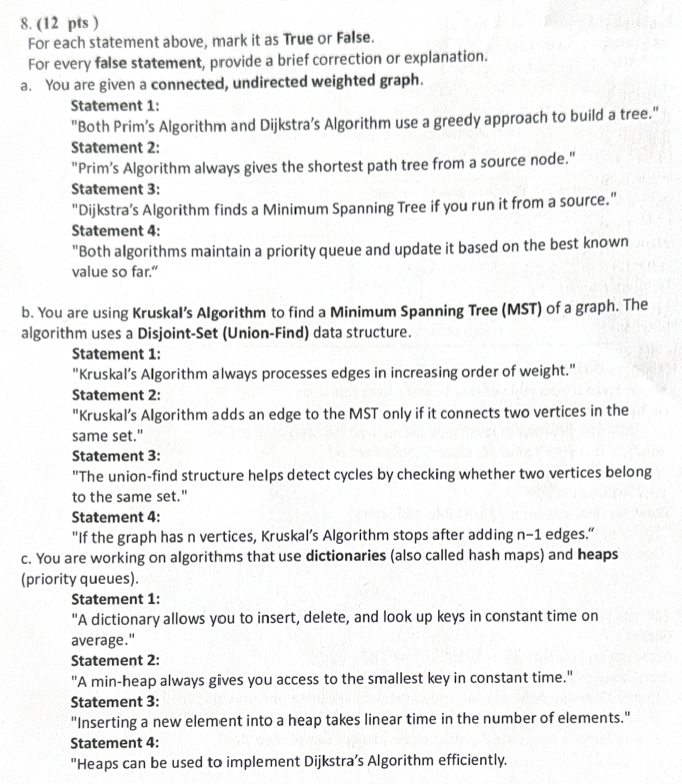

Q1：Radix Sort：LSD 基數排序、時間複雜度與穩定性
題目圖片

題目中文翻譯
一、題目在問什麼
二、必備背景知識
三、解題思維
四、SVG 流程圖
五、逐步解答
| 階段 | 排序依據 | 結果 |
|---|---|---|
| 初始 | - | cat, bat, ant, car, bar, arc, cab |
| Pass 1 | 第 3 字元：b,c,r,t | cab, arc, car, bar, cat, bat, ant |
| Pass 2 | 第 2 字元 | cab, car, bar, cat, bat, ant, arc |
| Pass 3 | 第 1 字元 | ant, arc, bar, bat, cab, car, cat |
時間複雜度：若有 n 個字串、每個長度 k、字元範圍大小 r，每一輪 counting sort 為 O(n+r)，共 k 輪，所以總時間為 O(k(n+r))。若 r 視為常數，則為 O(kn)。
穩定性：LSD Radix Sort 必須穩定，因為低位排序後形成的相對順序，要在高位相同時被保留下來。若不穩定，像 car 與 cab 在第一字元同為 c 時，前面已排好的後面字元順序可能被破壞。
六、最終答案
七、常見錯誤
八、考試得分關鍵
1. 先確認每個字串長度都是 3，所以只需要做三輪。
2. 第一輪看最後一個字元，目的不是得到最終字典序，而是先把最低位整理好。
3. 第二輪看中間字元，同字元時必須維持上一輪順序。
4. 第三輪看第一個字元，最後才得到真正 lexicographic order。
5. 回答複雜度時，不要只寫 O(n)，因為還有 k 輪與 r 個 bucket。
程式輸出結果
相關函式與變數說明
| 名稱 | 說明 |
|---|---|
| a | vector<string>，儲存所有待排序字串。 |
| k | 固定字串長度，本題為 3。 |
| pos | 目前排序的字元位置，從 2 到 0。 |
| stable_sort | C++ 標準函式，保證相同鍵值的相對順序不變。 |
必要 C++ 程式碼 / 驗證程式
#include <bits/stdc++.h>
using namespace std;
// LSD Radix Sort：固定長度字串，由最後一個字元排到第一個字元。
// stable_sort 用來保證每一輪排序穩定。
int main() {
vector<string> a = {"cat","bat","ant","car","bar","arc","cab"};
int k = 3;
cout << "Initial: ";
for (auto &s:a) cout << s << " ";
cout << "\n";
for (int pos = k - 1; pos >= 0; --pos) {
stable_sort(a.begin(), a.end(), [pos](const string& x, const string& y) {
return x[pos] < y[pos];
});
cout << "After pass at position " << pos << ": ";
for (auto &s:a) cout << s << " ";
cout << "\n";
}
}Q2：Graph：Adjacency Multilist 與 Sequential Adjacency List
題目圖片

題目中文翻譯
一、題目在問什麼
二、必備背景知識
三、解題思維
四、SVG 流程圖
五、逐步解答
令 e1=(A,B)、e2=(A,C)、e3=(B,C)、e4=(C,D)。
| 邊節點 | ivex | jvex | ilink | jlink |
|---|---|---|---|---|
| e1 | A | B | e2 | e3 |
| e2 | A | C | NULL | e3 |
| e3 | B | C | NULL | e4 |
| e4 | C | D | NULL | NULL |
各頂點的 adjacency list：
| Vertex | Neighbors |
|---|---|
| A | B, C |
| B | A, C |
| C | A, B, D |
| D | C |
六、最終答案
七、常見錯誤
八、考試得分關鍵
1. 先列出所有頂點與所有邊，避免漏邊。
2. 若是普通 adjacency list，無向邊要雙向存。
3. 若是 multilist，每條邊只建立一個 edge node。
4. 每個 vertex header 指向第一條 incident edge。
5. 回答優點時要明確講「節省重複邊儲存、刪除邊較方便」。
程式輸出結果
相關函式與變數說明
| 名稱 | 說明 |
|---|---|
| V | 頂點陣列，記錄 A、B、C、D。 |
| E | 邊集合，本題包含 AB、AC、BC、CD。 |
| adj | 一般 adjacency list，adj[i] 儲存第 i 個頂點的鄰居。 |
| ivex/jvex | Multilist 邊節點中的兩個端點欄位。 |
| ilink/jlink | Multilist 中分別串接兩端點 incident edge 的指標。 |
必要 C++ 程式碼 / 驗證程式
#include <bits/stdc++.h>
using namespace std;
int main() {
vector<char> V = {'A','B','C','D'};
vector<pair<int,int>> E = {{0,1},{0,2},{1,2},{2,3}};
vector<vector<int>> adj(4);
for (auto [u,v]: E) {
adj[u].push_back(v);
adj[v].push_back(u); // undirected graph stores both directions in normal adjacency list
}
for (int i=0;i<4;i++) {
cout << V[i] << ": ";
for (int v: adj[i]) cout << V[v] << " ";
cout << "\n";
}
}Q3：Biconnected Components：DFS Tree、dfn、low、BFS Tree
題目圖片

題目中文翻譯
一、題目在問什麼
二、必備背景知識
三、解題思維
四、SVG 流程圖
五、逐步解答
採用鄰居由小到大選擇，DFS 走訪順序：
1 → 2 → 3 → 5 → 4 → 6 → 7 → 8
DFS tree edges：
(1,2), (2,3), (2,5), (5,4), (4,6), (6,7), (2,8)
Backward edges：
(3,1), (7,5)
| Vertex | dfn | low | 說明 |
|---|---|---|---|
| 1 | 1 | 1 | root |
| 2 | 2 | 1 | 透過 child 3 的 back edge 回到 1 |
| 3 | 3 | 1 | back edge 到 1 |
| 5 | 4 | 4 | 子樹 cycle 只能回到 5 |
| 4 | 5 | 4 | 由 6→7 back 到 5 |
| 6 | 6 | 4 | 由 7 back 到 5 |
| 7 | 7 | 4 | back edge 到 5 |
| 8 | 8 | 8 | leaf |
Biconnected components：
- {1,2,3}
- {2,5}
- {4,5,6,7}
- {2,8}
BFS tree edges：
(1,2), (1,3), (2,5), (2,8), (5,4), (5,7), (4,6)
BFS cross edges：
(2,3), (6,7)
六、最終答案
七、常見錯誤
八、考試得分關鍵
1. 把每個點的鄰居排序，才能符合「選最小 index」規則。
2. DFS 一進入節點就設定 dfn 和 low。
3. 遇到未拜訪節點，該邊是 tree edge。
4. 遇到已拜訪且不是 parent 的祖先節點，該邊是 back edge。
5. 遞迴回來後用 child 的 low 更新 parent 的 low。
6. 最後用 low 條件切出 biconnected components。
程式輸出結果
相關函式與變數說明
| 名稱 | 說明 |
|---|---|
| adj | 無向圖鄰接串列。 |
| dfn | DFS 拜訪順序編號。 |
| low | 可回到的最小 dfn 值。 |
| parent | DFS tree 中每個節點的父節點。 |
| timer | 目前 DFS 時間戳。 |
必要 C++ 程式碼 / 驗證程式
#include <bits/stdc++.h>
using namespace std;
vector<vector<int>> adj;
vector<int> dfn, low, parent;
int timer = 0;
void dfs(int u) {
dfn[u] = low[u] = ++timer;
for (int v : adj[u]) {
if (!dfn[v]) {
parent[v] = u;
dfs(v);
low[u] = min(low[u], low[v]);
} else if (v != parent[u]) {
low[u] = min(low[u], dfn[v]); // back edge
}
}
}
int main() {
int n = 8;
adj.assign(n+1, {});
vector<pair<int,int>> edges = {{1,2},{1,3},{2,3},{2,5},{2,8},{5,4},{5,7},{4,6},{6,7}};
for (auto [u,v] : edges) { adj[u].push_back(v); adj[v].push_back(u); }
for (int i=1;i<=n;i++) sort(adj[i].begin(), adj[i].end());
dfn.assign(n+1,0); low.assign(n+1,0); parent.assign(n+1,-1);
dfs(1);
for (int i=1;i<=n;i++)
cout << "v=" << i << " dfn=" << dfn[i] << " low=" << low[i] << "\n";
}Q4：Threaded Binary Tree：Inorder 與 Preorder Thread
題目圖片

題目中文翻譯
一、題目在問什麼
二、必備背景知識
三、解題思維
四、SVG 流程圖
五、逐步解答
假設原樹結構為：A 的左子為 B、右子為 F；B 的左子為 C、右子為 E；C 的右子為 D；E 的左子為 G。
Inorder sequence：
C, D, B, G, E, A, F
| Node | Left thread | Right thread |
|---|---|---|
| C | Head | 右子 D 是 real child |
| D | C | B |
| G | B | E |
| E | 左子 G 是 real child | A |
| F | A | Head |
Preorder sequence：
A, B, C, D, E, G, F
| Node | Left thread | Right thread |
|---|---|---|
| C | B | 右子 D 是 real child |
| D | C | E |
| E | 左子 G 是 real child | F |
| G | E | F |
| F | G | Head |
六、最終答案
七、常見錯誤
八、考試得分關鍵
1. 先不要急著畫 thread，先寫出 traversal sequence。
2. Inorder 依 left-root-right；Preorder 依 root-left-right。
3. 找每個節點缺少的左或右 child pointer。
4. 缺左 child 就連到 predecessor；缺右 child 就連到 successor。
5. dummy head 通常用來處理最前與最後節點的 thread。
程式輸出結果
相關函式與變數說明
| 名稱 | 說明 |
|---|---|
| leftThread | true 表示 leftChild 是 thread，不是真正左子。 |
| rightThread | true 表示 rightChild 是 thread，不是真正右子。 |
| leftChild | 可能是真左子，也可能是 predecessor thread。 |
| rightChild | 可能是真右子，也可能是 successor thread。 |
| Dummy head | 輔助節點，方便 traversal 的開始與結束。 |
必要 C++ 程式碼 / 驗證程式
// 此題重點是圖形與 traversal sequence，C++ 可用中序/前序走訪驗證 sequence。Q5：Transitive Closure Graph：Warshall 演算法與 Reflexive Closure
題目圖片

題目中文翻譯
一、題目在問什麼
二、必備背景知識
三、解題思維
四、SVG 流程圖
五、逐步解答
頂點順序：A, B, C。
Adjacency matrix A：
| A | B | C | |
|---|---|---|---|
| A | 0 | 1 | 0 |
| B | 0 | 0 | 1 |
| C | 0 | 0 | 0 |
因為 A 可以到 B，B 可以到 C，所以 A 可以經由 B 到 C。
Transitive closure T：
| A | B | C | |
|---|---|---|---|
| A | 0 | 1 | 1 |
| B | 0 | 0 | 1 |
| C | 0 | 0 | 0 |
Reflexive transitive closure R：將每個節點到自己的位置設為 1。
| A | B | C | |
|---|---|---|---|
| A | 1 | 1 | 1 |
| B | 0 | 1 | 1 |
| C | 0 | 0 | 1 |
六、最終答案
七、常見錯誤
八、考試得分關鍵
1. 固定頂點順序 A,B,C，矩陣才不會混亂。
2. A 矩陣只放直接邊：A→B、B→C。
3. 因為 A→B 且 B→C，所以 transitive closure 補上 A→C。
4. T 不一定包含自己到自己。
5. R 是 reflexive，所以 diagonal 全部變成 1。
程式輸出結果
相關函式與變數說明
| 名稱 | 說明 |
|---|---|
| n | 頂點數量，本題為 3。 |
| T | transitive closure matrix，可達性矩陣。 |
| k | 中繼點 index。 |
| i | 起點 index。 |
| j | 終點 index。 |
必要 C++ 程式碼 / 驗證程式
#include <bits/stdc++.h>
using namespace std;
int main() {
// A=0, B=1, C=2
int n = 3;
vector<vector<int>> T(n, vector<int>(n,0));
T[0][1] = 1; // A -> B
T[1][2] = 1; // B -> C
for (int k=0;k<n;k++)
for (int i=0;i<n;i++)
for (int j=0;j<n;j++)
T[i][j] = T[i][j] || (T[i][k] && T[k][j]);
cout << "Transitive closure T:\n";
for (auto &row:T) {
for (int x:row) cout << x << " ";
cout << "\n";
}
cout << "Reflexive transitive closure R:\n";
for (int i=0;i<n;i++) T[i][i] = 1;
for (auto &row:T) {
for (int x:row) cout << x << " ";
cout << "\n";
}
}Q6：Hash Table：Quadratic Probing
題目圖片

題目中文翻譯
一、題目在問什麼
二、必備背景知識
三、解題思維
四、SVG 流程圖
五、逐步解答
| Key | h(k) | Probing | 插入位置 |
|---|---|---|---|
| 27 | 5 | 5 空 | 5 |
| 18 | 7 | 7 空 | 7 |
| 29 | 7 | 7 碰撞 → 8 空 | 8 |
| 28 | 6 | 6 空 | 6 |
| 39 | 6 | 6 碰撞 → 7 碰撞 → 10 空 | 10 |
| Index | 0 | 1 | 2 | 3 | 4 | 5 | 6 | 7 | 8 | 9 | 10 |
|---|---|---|---|---|---|---|---|---|---|---|---|
| Value | - | - | - | - | - | 27 | 28 | 18 | 29 | - | 39 |
優點：比 linear probing 減少 primary clustering。
缺點：可能發生 secondary clustering，且探查序列不一定涵蓋整張表。
六、最終答案
七、常見錯誤
八、考試得分關鍵
1. 建立 11 格的空 hash table。
2. 每個 key 先算 k mod 11。
3. 空格就直接放入。
4. 發生碰撞就依序試 i=1、i=2。
5. 最後表格要列 index 0 到 10，不能只寫有放值的位置。
程式輸出結果
相關函式與變數說明
| 名稱 | 說明 |
|---|---|
| m | hash table 大小，本題為 11。 |
| table | 雜湊表陣列，-1 表示空格。 |
| keys | 要插入的資料：27,18,29,28,39。 |
| h | 原始 hash 位置 k mod m。 |
| i | quadratic probing 的嘗試次數。 |
| pos | 實際檢查的位置 (h+i*i)%m。 |
必要 C++ 程式碼 / 驗證程式
#include <bits/stdc++.h>
using namespace std;
int main() {
const int m = 11;
vector<int> table(m, -1);
vector<int> keys = {27,18,29,28,39};
for (int k: keys) {
int h = k % m;
for (int i=0; i<m; i++) {
int pos = (h + i*i) % m;
if (table[pos] == -1) {
table[pos] = k;
break;
}
}
}
for (int i=0;i<m;i++)
cout << i << ": " << (table[i] == -1 ? string("-") : to_string(table[i])) << "\n";
}Q7：AOV Network：EST、LST、Critical Path
題目圖片

題目中文翻譯
一、題目在問什麼
二、必備背景知識
三、解題思維
四、SVG 流程圖
五、逐步解答
Forward pass：
| Activity | Duration | EST | EFT |
|---|---|---|---|
| A | 3 | 0 | 3 |
| B | 2 | 3 | 5 |
| C | 4 | 3 | 7 |
| D | 2 | 7 | 9 |
| E | 1 | 9 | 10 |
Backward pass：
| Activity | Duration | LST | Slack |
|---|---|---|---|
| A | 3 | 0 | 0 |
| B | 2 | 5 | 2 |
| C | 4 | 3 | 0 |
| D | 2 | 7 | 0 |
| E | 1 | 9 | 0 |
Critical path：A → C → D → E，總時間 3+4+2+1 = 10。
六、最終答案
七、常見錯誤
八、考試得分關鍵
1. 先畫出活動先後關係 DAG。
2. Forward pass：EST 等於所有前置活動 EFT 的最大值。
3. 專案完成時間是終點活動的最大 EFT。
4. Backward pass：LFT 等於所有後繼活動 LST 的最小值。
5. LST=LFT-duration。
6. slack=0 的節點就是 critical path 上的活動。
程式輸出結果
相關函式與變數說明
| 名稱 | 說明 |
|---|---|
| dur | 每個活動的 duration。 |
| succ | successor list，記錄活動後繼。 |
| pred | predecessor list，記錄活動前置。 |
| EST/EFT | 最早開始與最早完成時間。 |
| LST/LFT | 最晚開始與最晚完成時間。 |
| slack | 可延遲時間，LST-EST。 |
必要 C++ 程式碼 / 驗證程式
#include <bits/stdc++.h>
using namespace std;
int main() {
map<char,int> dur = {{'A',3},{'B',2},{'C',4},{'D',2},{'E',1}};
vector<pair<char,char>> edges = {{'A','B'},{'A','C'},{'B','D'},{'C','D'},{'D','E'}};
map<char, vector<char>> succ, pred;
for (auto [u,v]: edges) { succ[u].push_back(v); pred[v].push_back(u); }
vector<char> topo = {'A','B','C','D','E'};
map<char,int> EST, EFT;
for (char u: topo) {
EST[u] = 0;
for (char p: pred[u]) EST[u] = max(EST[u], EFT[p]);
EFT[u] = EST[u] + dur[u];
}
int project = EFT['E'];
map<char,int> LST, LFT;
for (auto it = topo.rbegin(); it != topo.rend(); ++it) {
char u = *it;
if (succ[u].empty()) LFT[u] = project;
else {
LFT[u] = INT_MAX;
for (char v: succ[u]) LFT[u] = min(LFT[u], LST[v]);
}
LST[u] = LFT[u] - dur[u];
}
for (char u: topo)
cout << u << ": EST=" << EST[u] << " LST=" << LST[u]
<< " slack=" << LST[u]-EST[u] << "\n";
}Q8：True / False：Prim、Dijkstra、Kruskal、Union-Find、Dictionary、Heap
題目圖片

題目中文翻譯
一、題目在問什麼
二、必備背景知識
三、解題思維
四、SVG 流程圖
五、逐步解答
| Part | Statement | T/F | 修正或說明 |
|---|---|---|---|
| a1 | Prim 與 Dijkstra 都用 greedy 方式建 tree | True | 但 tree 的目標不同 |
| a2 | Prim always gives shortest path tree | False | Prim 給 MST，不保證 source shortest path |
| a3 | Dijkstra finds MST | False | Dijkstra 找 SPT，不是 MST |
| a4 | 兩者都可維護 priority queue | True | Prim key=edge weight；Dijkstra key=distance |
| b1 | Kruskal 依遞增邊權處理 | True | 核心步驟 |
| b2 | Kruskal 加入同一集合的兩點 | False | 應加入不同集合，避免 cycle |
| b3 | Union-Find 用 same set 偵測 cycle | True | 同集合代表加邊會成環 |
| b4 | n vertices 時加入 n-1 edges 停止 | True | connected graph 的 MST 有 n-1 條邊 |
| c1 | Dictionary 平均 O(1) insert/delete/lookup | True | hash table average case |
| c2 | Min-heap constant time access smallest key | True | min 在 root，Top/FindMin O(1) |
| c3 | Heap insert takes linear time | False | heap insert 是 O(log n) |
| c4 | Heap 可有效實作 Dijkstra | True | priority queue 可用 binary heap |
六、最終答案
七、常見錯誤
八、考試得分關鍵
1. 先判斷 statement 屬於 Prim、Dijkstra、Kruskal、Union-Find、Dictionary 或 Heap。
2. Prim 的目標是 MST，不是 shortest path。
3. Dijkstra 的目標是 shortest path tree，不是 MST。
4. Kruskal 只加入連接不同集合的邊，避免 cycle。
5. Heap 可快速取得最小或最大元素，但插入不是 O(1)。
程式輸出結果
相關函式與變數說明
| 名稱 | 說明 |
|---|---|
| Prim | Greedy MST algorithm。 |
| Dijkstra | Single-source shortest path algorithm。 |
| Kruskal | Sort edges + union-find 的 MST algorithm。 |
| Union-Find | 用 Find/Union 判斷是否同集合。 |
| Dictionary | 平均 O(1) 查找、插入、刪除的抽象資料型態。 |
| Heap | priority queue 常用實作。 |
必要 C++ 程式碼 / 驗證程式
// 此題是觀念判斷題，不需要完整 C++；若要驗證 Kruskal，可用 union-find 程式檢查 same set。